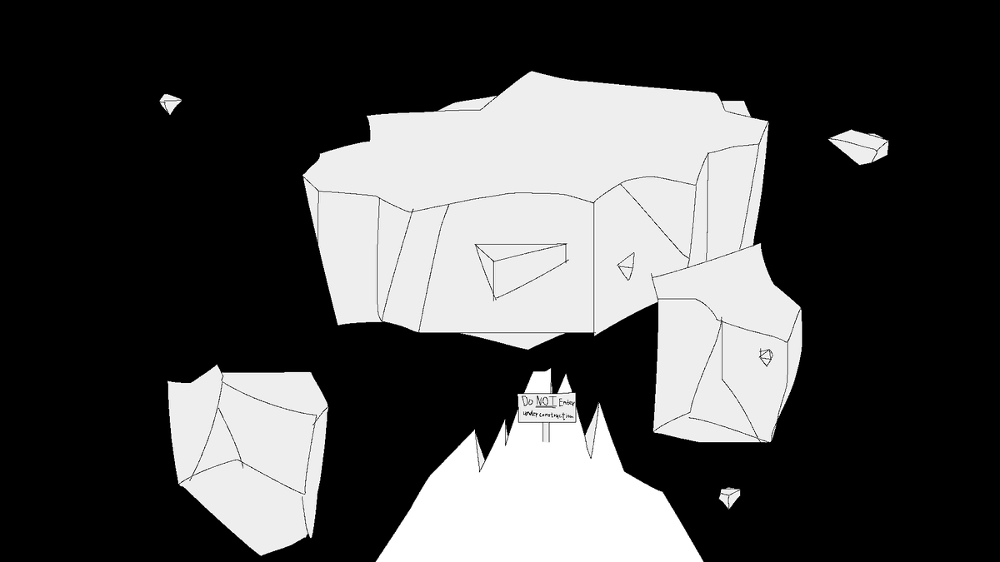
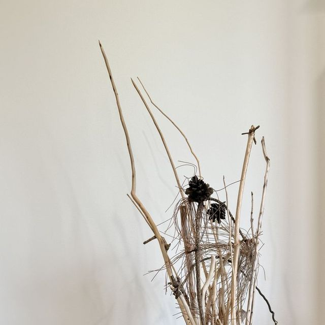
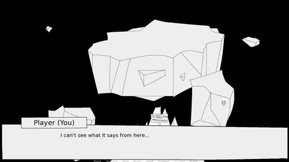
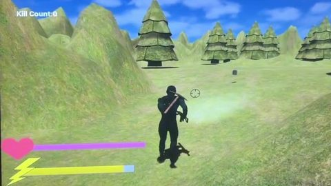
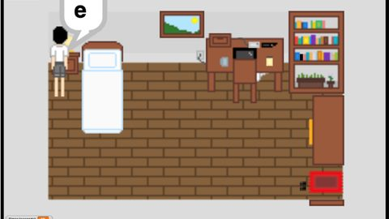
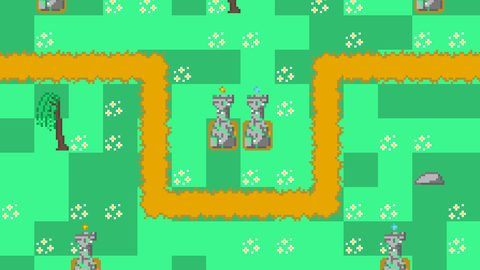
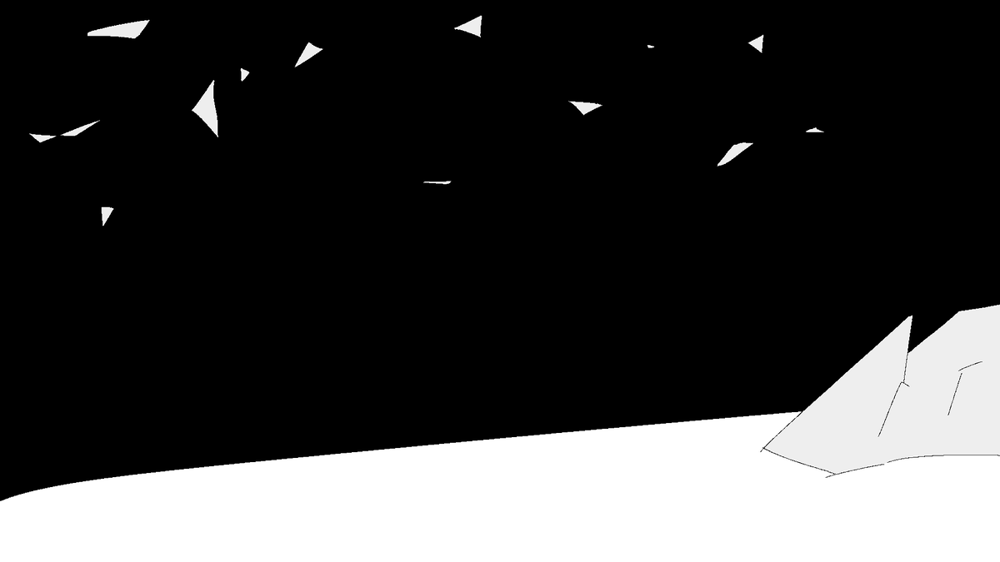
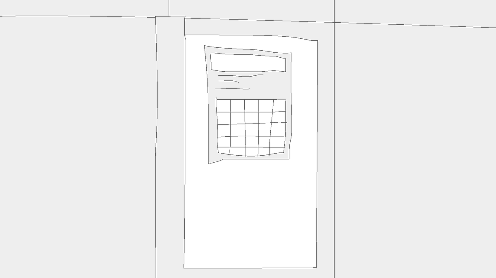

03A point-and-click visual novel about the place where abandoned games, assets and ideas go. You are looking at it.
under construction
04Find the weapon before night falls, then survive. I built the level and the spawn system.
playable · video
05Get ready for work before the timer runs out. Based on the mornings my mom can't find her phone.
playable
06Three themes of 16×16 tiles for a classmate's tower defense game. Every tile drawn separately so they could build any map.
art
They almost look… flat. Ideas that haven't become games. Each one is a rule I want to see people live inside.
Open the drawer →